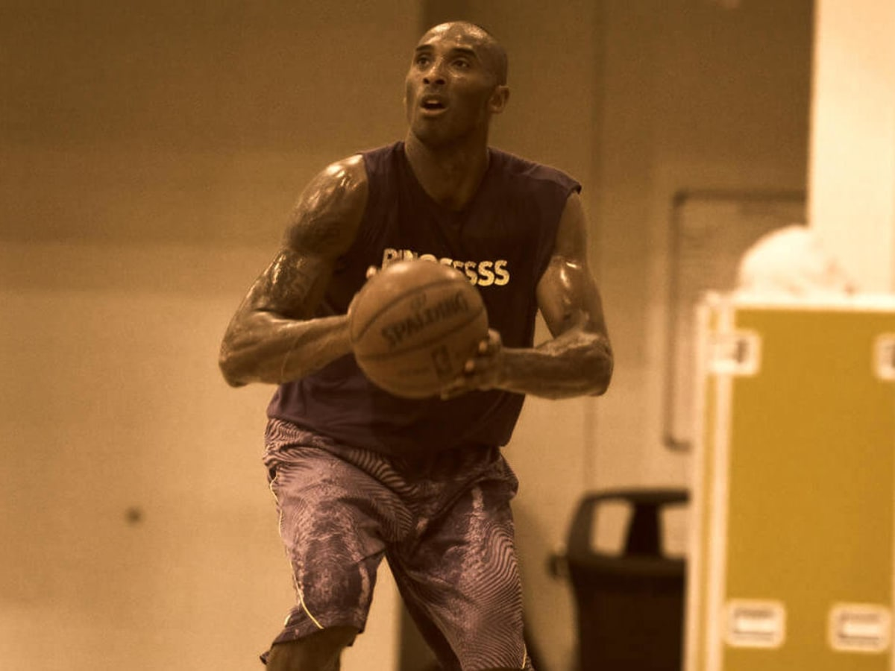
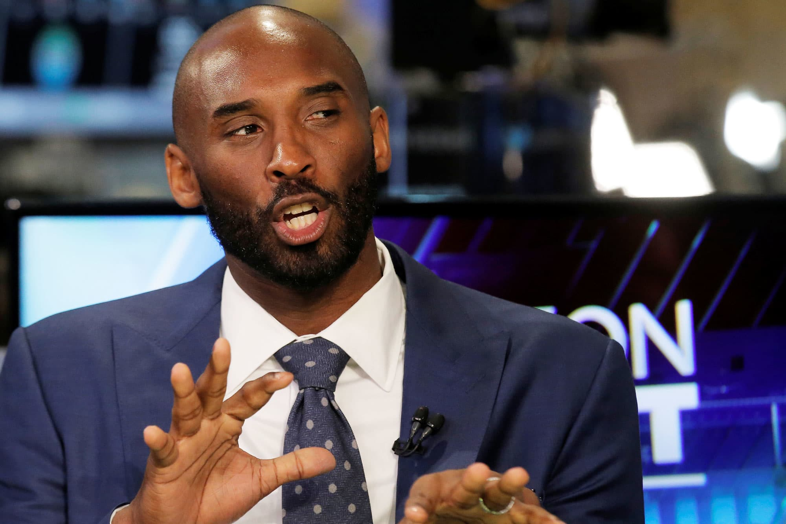

More Than an Athlete
Kobe Bryant’s impact extended far beyond the basketball court. As a Black athlete, he became a global ambassador for basketball, using his platform to inspire and motivate millions.

The Mamba Mentality
Kobe's "Mamba Mentality" wasn’t just about basketball; it was a mindset that challenged everyone to push beyond limits, never settle, and embrace resilience.

Beyond the Court: Business & Art
After retiring, Kobe continued to excel in film and business, winning an Oscar for *Dear Basketball*, and proving that Black excellence transcends sports.